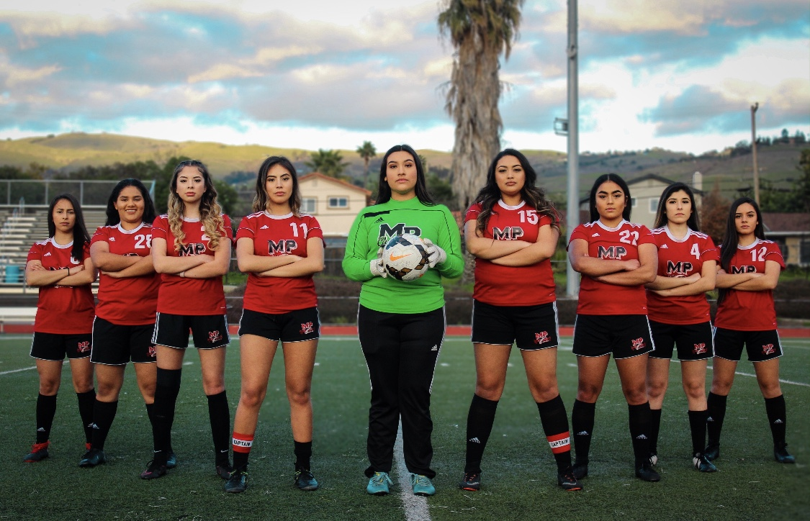

Portfolio



I am a first year business major at the University of California Riverside. My work experience varies from lifeguarding, teaching, and serving food at a dining hall. I am CPR Certified and have a lot of experience in public speaking. In addition to the jobs I had in the past, I also attended business conferences, volunteered at local organizations in the city of San Jose, and helped during a lot of community service events around my neighborhood.
In High School I was involved in student government as the ASB President, was the captain of the girls varsity team, and was in student site council. All of these growing opportunities made me learn leadership skills that I will carry with me for life. Although I do not have the most experience as other people around the world, I am a team player, I am eager to learn new skills, I am dedicated and I am ambitious for prosperity. For my future goals in my career, I plan to start my own non profit organization that specializes in helping third world country communities gett water and food supply more accessibly. Poverty around the world is a very serious issue. Coming form immigrant parents, I have first hand whitnessed what it felt like to not have the basic everyday needs like water or food in my mom's country. With the passion and determination that I have for leadership and business, I know that one day I will be able to help millions of people around the world.
• Taught 2-5 graders math, english, and science
• Tutored sixth graders in an after school program
• Helped develop studetns character through activities
• Served and cooked dishes for students
• worked custodial
• worked chashier
• developed leadership skills with coworkers through trainings